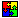
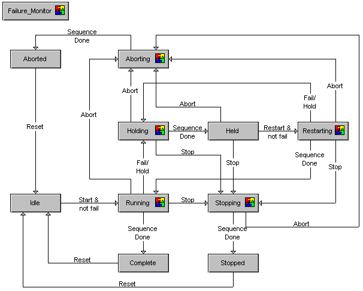

State transition diagrams
Before doing the exercises for creating the phase logic, read the next few topics to gain a better understanding of what comprises the phase logic. The phase logic defines the states of a phase (running, stopping, holding, and so on) and the logic associated with each state. The phase logic executes in the DeltaV controller. (In simulation mode, it can execute in the workstation.)
When you open a phase class in Control Studio, you will see that it contains a preconfigured State Transition Diagram that governs the transitions between the phase states. (The overall flow of this State Transition Diagram cannot be changed.) This diagram shows the active states (when the phase is doing something, such as executing its normal control actions or an orderly shutdown), the static states (when the phase is waiting for a command, such as Start or Reset), and the paths between states. The phase logic also contains a Failure Monitor block.
The configuration engineer uses Control Studio to write a sequential function chart (SFC) for each active state (Running, Holding, Stopping, Restarting, and Aborting). The active states are shown in the State Transition Diagram as embedded composite blocks, marked by

. The Failure Monitor is configured in Control Studio using a Function Block Diagram. The static states (Idle, Held, Complete, Stopped, and Aborted) cannot be modified and do not contain any logic.The paths on the diagram follow a defined sequence for going from one state to another. The words along the paths are either Sequence Done (meaning an active phase has completed and is going to the following static state) or they are specific commands that can be used in the phase logic to transition from the current state to the next. For example, the Stop command can be used to go from Running (or Holding, Held, or Restarting) to Stopping.
In this tutorial we show examples of the logic for the different states, but we don't fully configure every state for every phase. However, it is important that in your real batch system you carefully consider which of the active states you will use and configure the logic for those states as well as for the Failure_Monitor. If you don't configure logic for an active state, it defaults to true (Sequence Done) and the phase goes to the next state along the path.
